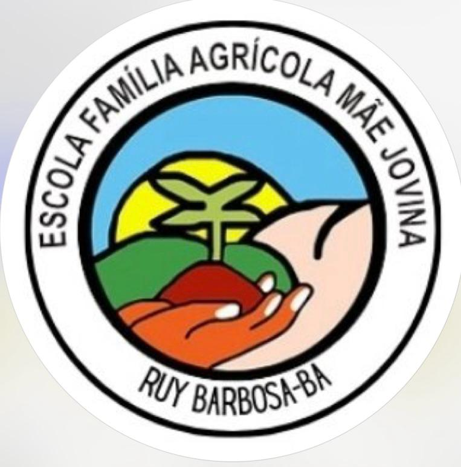

Escola Família Agrícola Mãe Jovina - EFAMJ
Uma escola agrícola desempenhando um papel fundamental nas comunidades de Ruy Barbosa,
oferecendo educação de qualidade aliada à valorização do campo e de suas potencialidades.
Ela capacita jovens e crianças para atuarem de forma sustentável na agricultura,
promovendo o desenvolvimento local e fortalecendo a economia rural. Além disso, estimula o
senso de responsabilidade ambiental, o empreendedorismo e a permanência das famílias no campo,
contribuindo para evitar o êxodo rural. Ao integrar teoria e prática, essas instituições preparam cidadãos conscientes,
capazes de transformar a realidade de suas comunidades.